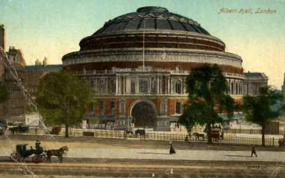
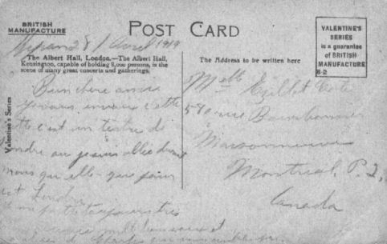

Ripon 28/avril 1919 Mlle Ezildat Cote
bien chere amie 580 Boubonnier
je vous envoix cette carte c’est un teâtre de Londre Maisonneuve
ou je suis allée durant mais quelle-que jour est Montreal P.Q.
Londre. Je me portte toujours tres bien. Recoix Canada
Mille bonsoirs et salues de Charles qui vous
Oubli pas.
Ripon 28 avril 1919 Mlle Ézilda Côté
Bien chère amie 580 Bourbonnière
Je vous envoie cette carte : c’est un théâtre de Maisonneuve
Londres ou je suis allé durant mes quelques jours Montréal P.Q.
À Londres. Je me porte toujours très bien. Recevez Canada
Mille bonsoirs et saluts de Charles qui ne vous
Oublie pas.